THE GUIDE
Everything PALEOTONE does on the FM-1, button by button. Every picture is a real screen, drawn by the firmware itself. Read it from the top the first time, then come back to it as a reference. You can follow along without an FM-1 in the browser version.
Contents
- Before you start
- The panel
- How to read this guide
- Six tracks
- Tap, hold and lock
- Your first five minutes
- Sounds and PRESETS
- SAURUS: the creature calls
- SFX: the prehistoric world
- ROAR: drones, war drums, RING
- The drum track
- Recording
- The seven layers
- Every page, knob by knob
- Sections and the song
- The HOME menu
- MIDI, the editor, backups
- Troubleshooting and recovery
01Before you start
- Back up. Open the editor in Chrome or Edge, connect the FM-1 and save a backup of your projects.
- Install. Open the installer, connect the FM-1 straight to the computer with a USB data cable (no hub), close other MIDI apps, and press Install. It takes about a minute; don't unplug it.
- Switch on. The first power-on shows the boot screen, then plays the demo song, VALLEY OF GIANTS. Press PLAY to stop it. It's yours to change, or clear with TOOLS > NEW.
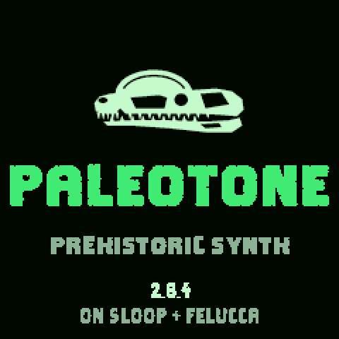
PALEOTONE is built on SLOOP 2.8.4 by isod89 (itself on Felucca), so everything SLOOP's sequencer, song mode and editor do is here. On top of that come six tracks instead of four, three prehistoric engines (SAURUS, SFX and ROAR), more than 200 sounds in ten kinds, five prehistoric drum kits, and big Clayborn text on every screen.
No FM-1 yet? The browser version runs the same firmware. Play it with the mouse, the computer keys printed on its panel, or a MIDI keyboard.
02The panel
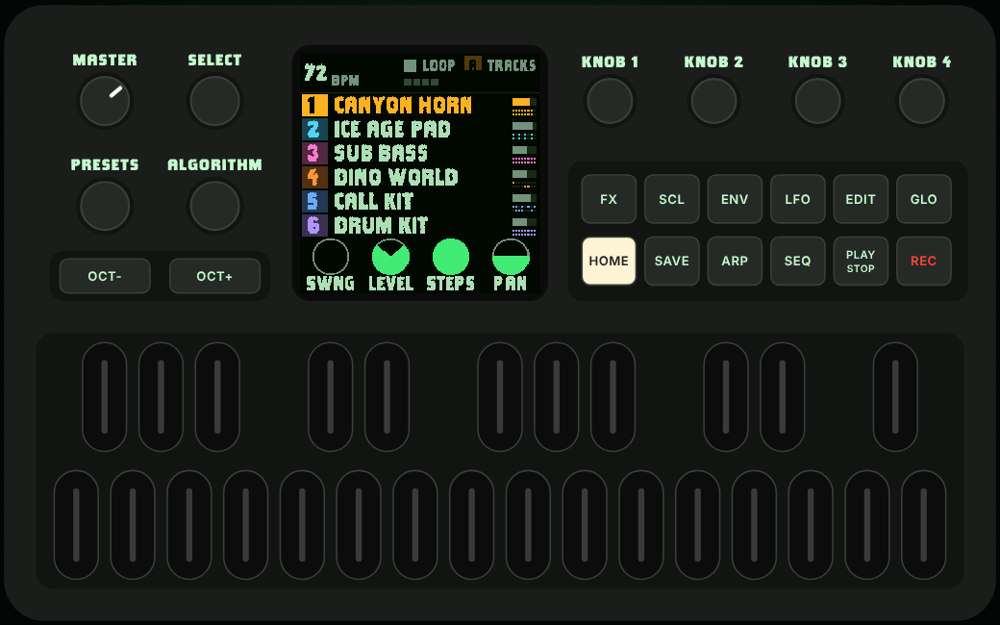
| Control | Its main job |
|---|---|
| MASTER | Output volume (headphones and line out). |
| SELECT | The tempo on TRACKS and inside a layer; on a page, the previous or next page of that button. |
| PRESETS | The selected track's sound (on the drum track, the kit). A bar names the sound and its kind. |
| ALGORITHM | Selects the track, 1 to 6, on every screen. |
| KNOB 1–4 | Whatever the four dials at the bottom of the screen show. |
| OCT− OCT+ | Octave down and up (both together: back to 0). On the drum track, ghost and hard hits while held. |
| PLAY | Start and stop. Works inside every layer. |
| REC | Record (tap). Hold about 2 seconds to clear the selected track. |
| HOME | Back to the TRACKS screen. Hold it for the menu. Tap it while holding a layer button to lock the layer. |
| FX SCL ENV LFO EDIT GLO SAVE ARP SEQ | Tap for that button's pages, hold for its layer (ENV and LFO only have pages). See tap, hold and lock. |
| 27 keys | 16 white keys (F3 to G5, called key 1 to key 16 here) and 11 black keys. |
03How to read this guide
| Written | Means |
|---|---|
| tap FX | Press FX and let go without touching anything else. |
| hold FX | Keep FX pressed. Its layer shows after about a third of a second. |
| FX + key 3 | Hold FX and, while it is held, press white key 3. |
| FX + KNOB 2 | Hold FX and turn KNOB 2. |
| key 1 … key 16 | The white keys from the lowest (F3) to the highest (G5). |
| Key | 1 | 2 | 3 | 4 | 5 | 6 | 7 | 8 | 9 | 10 | 11 | 12 | 13 | 14 | 15 | 16 |
|---|---|---|---|---|---|---|---|---|---|---|---|---|---|---|---|---|
| Note | F3 | G3 | A3 | B3 | C4 | D4 | E4 | F4 | G4 | A4 | B4 | C5 | D5 | E5 | F5 | G5 |
04Six tracks
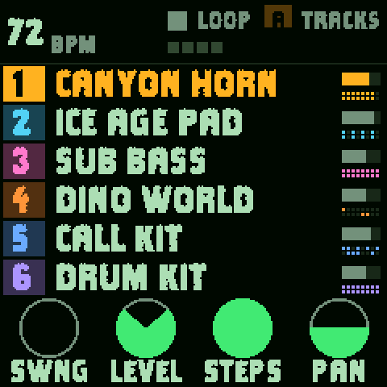
PALEOTONE plays six tracks at once, each with its own colour. Turn ALGORITHM to pick the track you play, record and edit; the screen takes its colour.
| Track | Plays | At first |
|---|---|---|
| 1 | a synth | MARIMBA |
| 2 | a synth | JUNGLE PAD |
| 3 | a synth | JUNGLE NIGHT |
| 4 | SFX, the prehistoric world | DINO WORLD |
| 5 | CALLS, the SAURUS creatures | CALL KIT |
| 6 | drums, 16 sounds on the keys | DRUM KIT |
Tracks 1 to 5 can each take any sound: the names are where they start. The demo song swaps in its own (CANYON HORN, ICE AGE PAD, SUB BASS).
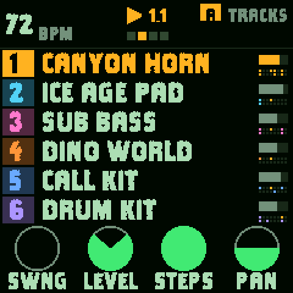
Each line shows a track's sound and, on the right, its pattern; the top shows the tempo, LOOP or SONG, the section and, while it plays, the step. The four knobs set the selected track's SWNG (swing), LEVEL, STEPS (its length) and PAN. SELECT is the tempo.
White on the screen always means what you're touching; red means recording.
05Tap, hold and lock
Every function button has two lives.
- Tap it and its pages open: sound design and settings. Tap it again for its next page, or turn SELECT to walk them both ways. Each button remembers the page you used last.
- Hold it and you get a layer: while it's held, the white keys and the four knobs do something else, and the screen shows the 16 keys as 16 tiles (four rows of four). Let go and you're back to playing.
- Lock a layer: hold its button and tap HOME. It stays open with both hands free. Any other button lets it go; PLAY, REC and OCT− / OCT+ keep working inside it.
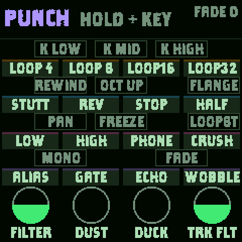
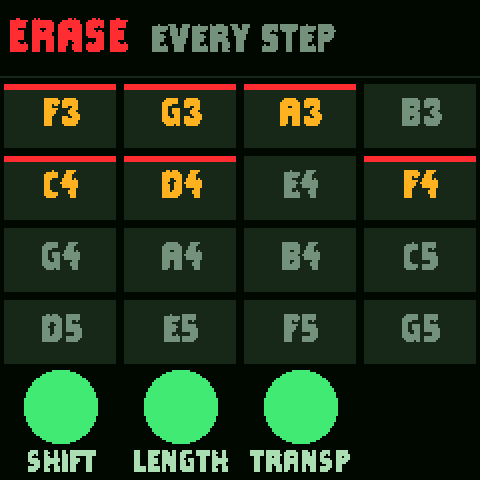
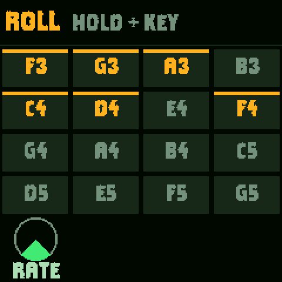
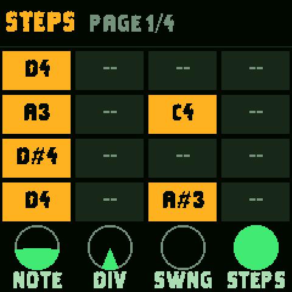
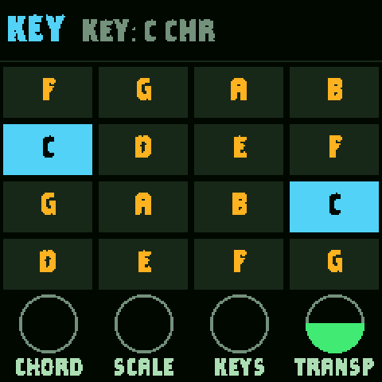
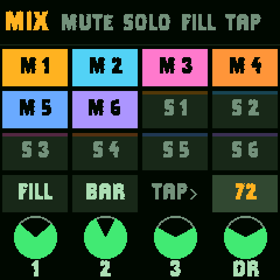
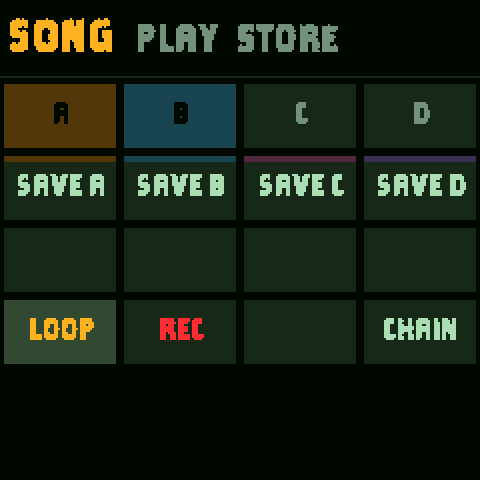
The layers are described one by one in the seven layers.
06Your first five minutes
- Hear the demo. Press PLAY. VALLEY OF GIANTS plays on all six tracks. Lost it? SAVE pages > TOOLS > DEMO brings it back.
- Call a creature. Turn ALGORITHM to track 5 (blue, CALL KIT) and play the keys: each key is a different creature, from a growl to a pterosaur shriek.
- Shake the ground. Track 4 (orange, DINO WORLD) has thunder, rain, a volcano and footsteps, one per key.
- Find a sound. On any of tracks 1 to 5, turn PRESETS. The bar names each sound and its kind; try the SAUR and ROAR kinds.
- Record a beat. Turn to track 6 (purple, DRUM KIT), press REC and play the drums. Hold OCT− for ghost notes, OCT+ for hard hits. REC again stops recording; the loop plays on.
- Punch in an effect. Hold FX and hold a key: an effect on the whole mix for as long as you hold it.
- Undo. EDIT + OCT− takes the last change back; EDIT + OCT+ puts it back.
07Sounds and PRESETS
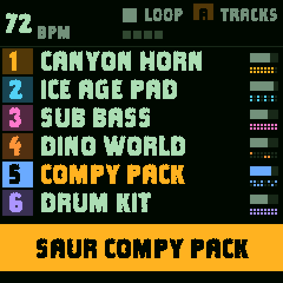
Turn PRESETS to change the selected track's sound. Your favourites come first, then the factory sounds by kind, then your own presets. The track's line shows the new name, and a big bar over the knobs names the sound and its kind.
| Kind | Sounds | For |
|---|---|---|
| BASS | 12 | sub, analog and FM basses |
| KEYS | 6 | pianos, electric pianos |
| ORGN | 12 | organs and FM bells |
| PAD | 33 | pads, choirs, jungle and ice-age beds |
| LEAD | 27 | leads, horns, flutes |
| PLCK | 23 | plucks, marimbas, kalimbas |
| DRUM | 9 | pitched drum and percussion sounds |
| FX | 40 | weather, swarms, glitches, the SFX world |
| SAUR | 21 | SAURUS creatures and CALL KIT |
| ROAR | 20 | ROAR drones, war drums and rituals |
Each sound is played by an engine: SLOOP's twelve (ANALOG, FM6, SAMPLE, PHYS and the rest) plus PALEOTONE's three. Tap EDIT to shape the sound with its engine's pages, and save it as your own from the SAVE pages (USER).
08SAURUS: the creature calls
SAURUS is a creature voice: one note is one call, with a body, a throat and a breath. Its twenty creatures run from LOW GROWL and DEEP RUMBLE through HADRO HORN, TYRANT ROAR, RAPTOR BARK and PTERO SHRIEK to BABY REX, SEA MONSTER and COMPY PACK. CALL KIT puts all twenty on the keys at once, starting at C2: play a herd.
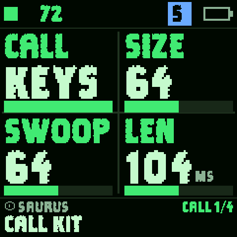
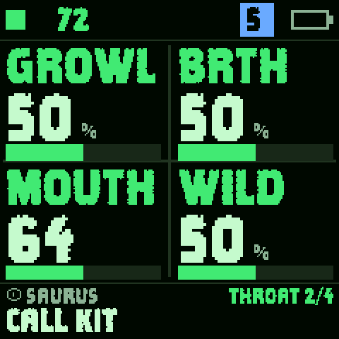
| Knob | Does |
|---|---|
| CALL | The call's shape: BELLOW, ROAR, BARK, HOOT, TRILL, CHIRP, MOAN and more. KEYS (on CALL KIT) gives each key its own creature. |
| SIZE | How big the animal is: its throat's formants, from small to huge. |
| SWOOP | How deep the call's pitch moves (up to two octaves). |
| LEN | How long one call lasts. |
| GROWL | A rough throat: the fry of a big animal, an octave down, and grit. |
| BRTH | Breath and air. |
| MOUTH | The mouth's shape: closed and dark, or open and bright. |
| WILD | Makes each call its own: a little longer or shorter, a little off pitch. |
09SFX: the prehistoric world
Track 4's DINO WORLD puts sixteen sounds of the prehistoric world on the white keys, one per key:
| 1 THUNDER | 2 RUMBLE | 3 WIND | 4 RAIN |
| 5 VOLCANO | 6 LAVA | 7 QUAKE | 8 FOOTSTEP |
| 9 WINGS | 10 INSECTS | 11 FAR ROAR | 12 RIVER |
| 13 FIRE | 14 ROCKFALL | 15 TAR PIT | 16 SQUAWK |
Sequence them like drums for a living landscape: rain on every bar, thunder now and then, a far roar on the last beat. The FX kind in PRESETS has more weather and swarms (TROPIC STORM, MONSOON, GEYSER, METEOR, CICADA BUZZ…).
10ROAR: drones, war drums, RING
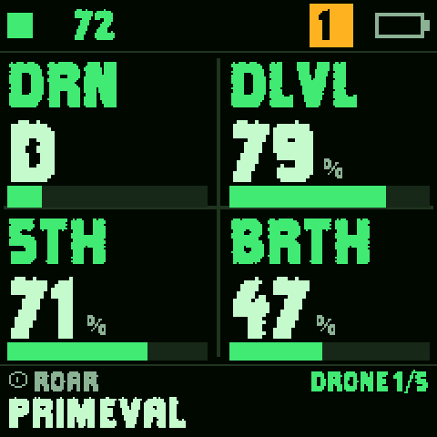
ROAR plays drones under a melody, and drum ensembles that march by themselves: EARTHQUAKE, TUNDRA, PRIMEVAL, STAMPEDE, WAR CHANT, WAR PARADE, RITUAL FIRE, TITAN MARCH, HEARTBEAT, TALK DRUMS, FIVE MOONS, CHAOS DRUMS and more, twenty in all.
The DRONE page sets the drone's note (DRN), its level (DLVL), a fifth above it (5TH) and its breath (BRTH).
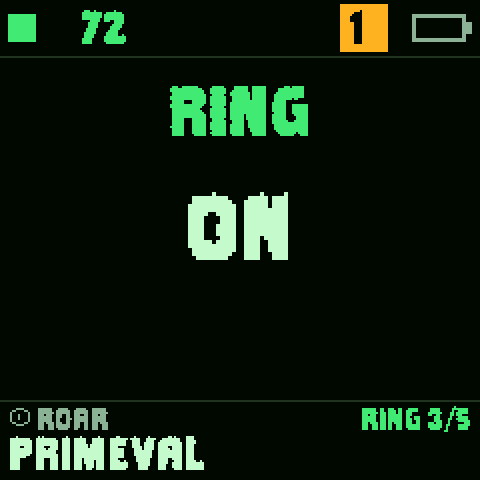
RING is back: on a ROAR sound, tap EDIT until RING shows (or turn SELECT) and turn KNOB 1 to switch it ON or OFF. With RING on, the drones ring on through the rests while the song plays, instead of stopping with each note. It's saved with the sound.
11The drum track
Track 6 plays 16 drum sounds, one per white key. A black key plays the sound of the white key on its left, for two-finger rolls. Hold OCT− while you hit for ghost notes and OCT+ for hard hits: the FM-1's keys have no velocity, so every hit is GHOST, SOFT, NORM or HARD.
| 1 KICK | 2 KICK2 | 3 SNARE | 4 CLAP |
| 5 HAT | 6 OPEN | 7 PEDAL | 8 RIM |
| 9 SNR2 | 10 TOM L | 11 TOM H | 12 CRASH |
| 13 RIDE | 14 SHAKE | 15 CONGA | 16 BELL |
PRESETS on the drum track picks the kit: PALEOTONE's DRUM KIT, TRIBAL KIT, WAR DRUMS, BONE RATTLE and RITUAL, then SLOOP's 32 (808, 909, BOOMBAP, JUNGLE, TECHNO, AMBIENT…), your own sample kits USR1–USR4 and synthesised kits SYN1–SYN4.
The DRUMS screen
With track 6 selected, tap EDIT on TRACKS: the DRUMS screen opens. Tap EDIT again (or turn SELECT) to go from the grid to the kit to one sound.
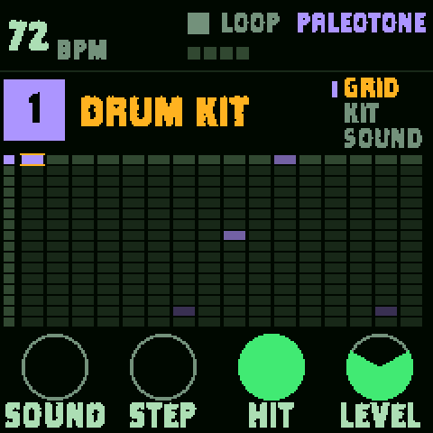
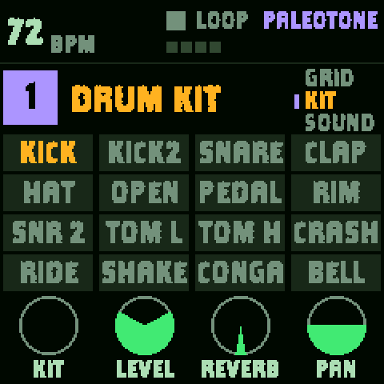
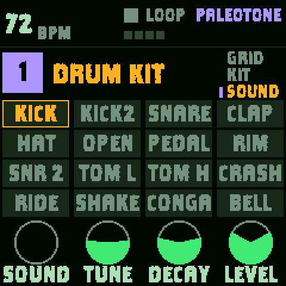
| Screen | KNOB 1 | KNOB 2 | KNOB 3 | KNOB 4 |
|---|---|---|---|---|
| GRID | SOUND (the row) | STEP (the column) | HIT: set or clear it | LEVEL of that hit |
| KIT | KIT | LEVEL | REVERB | PAN |
| SOUND | SOUND | TUNE | DECAY | LEVEL |
12Recording
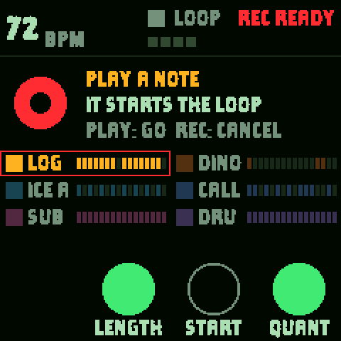
PALEOTONE records live and layers every pass over the last (overdub). Notes land on the nearest step as you heard them.
| When | REC does |
|---|---|
| Playing | Records the selected track at once. REC again stops recording; the loop plays on. |
| Stopped | Arms: REC READY. Your first note starts the loop and is step 1. PLAY starts it too; REC again cancels. |
| Stopped, empty project | A free take: play at your own tempo, then press REC on the "1" after your last bar to close the loop. |
| Held about 2 s | Clears the selected track. Let go before the ring fills and nothing happens. |
On the REC READY screen, LENGTH sets the loop (1, 2 or 4 bars), START picks your first note or a one-bar count-in, and QUANT on snaps to the steps while off keeps your timing.
Turn ALGORITHM while recording and the take moves to the next track without stopping. The PLAY light flashes on every beat; an audible click is GLO > GLOBAL > CLICK.
13The seven layers
Hold the button; the keys and knobs change job until you let go (or lock it with HOME).
FX · PUNCH
FX + a key (white or black) plays that key's punch-in effect on the whole mix for as long as it's held: kills, loops and stutters, rewind, tape stop, half speed, freeze, filters, crush, phone, echo, wobble.
| FX + KNOB 1 | master FILTER: left low-pass, right high-pass |
| FX + KNOB 2 | DUST: old sampler and vinyl |
| FX + KNOB 3 | DUCK: sidechain pump from the kick |
| FX + KNOB 4 | TRK FLT: the same filter on the selected track only |
| FX + OCT− / OCT+ | reverb throw / echo throw while held |
EDIT · ERASE
| EDIT + key, playing | erases that sound or note from every step the playhead passes while you hold it |
| EDIT + key, stopped | erases it from the whole pattern |
| EDIT + KNOB 1 | SHIFT: every step one later or earlier |
| EDIT + KNOB 2 | LENGTH: right doubles the pattern, left halves it |
| EDIT + KNOB 3 | TRANSP: every note a semitone up or down |
| EDIT + OCT− / OCT+ | undo / redo |
| EDIT + a black key | drum track: the white keys mute and unmute their sound instead |
ARP · ROLL
ARP + a held key repeats it on the grid, locked to the tempo and swing, until you let go. KNOB 1 is the RATE: 1/8, 1/16, 1/32, 32T, 1/64. On the drum track add OCT− or OCT+ for ghost or hard rolls. While recording, a roll is written as ratchets. (The arpeggiator itself is on the ARP pages: tap ARP.)
SEQ · STEPS
| SEQ + empty step | sets it, with the sound or note you played last |
| SEQ + set step (tap) | clears it |
| SEQ + OCT− / OCT+ | the page: steps 1–16, 17–32, 33–48, 49–64 |
| SEQ + KNOB 1–4 | NOTE (or sound) to set · DIV · SWNG of the track · STEPS (1–64) |
| SEQ + step + KNOB 1–4 | its note (or which drum sound) · LEVEL / VEL · RATCHET x1–x4 · NUDGE |
| SEQ + step + PRESETS | a parameter lock on that step (ALGORITHM picks which parameter) |
| SEQ + step + OCT+ | fill condition: normal, FILL ONLY, NO FILL |
| SEQ + step + OCT− | clears the step's nudge, locks and fill condition |
SCL · KEY
| SCL + any key | the key of the song: the root of all the synth tracks |
| SCL + KNOB 1 | CHORD of the track: OFF, TRIAD, 7TH, 9TH, SUS4, POWER (one finger, one chord) |
| SCL + KNOB 2 | SCALE: 16 scales |
| SCL + KNOB 3 | KEYS: OFF (chromatic), SNAP (rounded to the scale), WHITE (the white keys walk the scale) |
| SCL + KNOB 4 | TRANSP the track, ±24 semitones |
GLO · MIX
| GLO + key 1–6 | mute / unmute track 1–6 |
| GLO + key 7–12 | solo track 1–6 (solos add up) |
| GLO + key 13 (held) | FILL while held |
| GLO + key 14 | FILL BAR: the next bar plays as a fill |
| GLO + key 16 | tap tempo |
| GLO + KNOB 1–4 | levels of tracks 1, 2, 3 and the drums |
SAVE · SONG
| SAVE + key 1–4 | play section A–D (playing: from the next bar) |
| SAVE + several of keys 1–4 | a quick chain, played in turn when you let go |
| SAVE + key 5–8 | save the loop into A–D (over a used one: again within 3 s) |
| SAVE + key 13 | LOOP or SONG mode |
| SAVE + key 14 | SONG REC: what you play from the next bar is written into the song |
| SAVE + key 16 | the SONG screen |
14Every page, knob by knob
Tap a button for its pages; tap again (or turn SELECT) for the next. The top of a page shows the tempo and the track; the bottom shows the engine, the sound and the page (ENV 1/2…). Values are drawn large, with a bar under each.
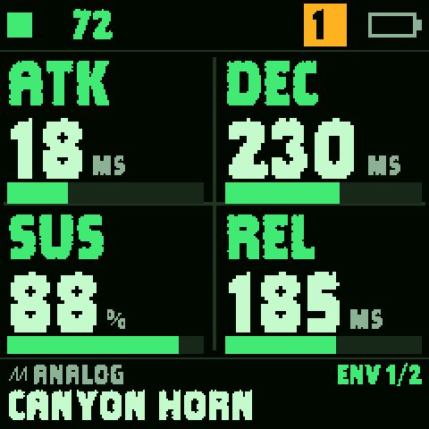
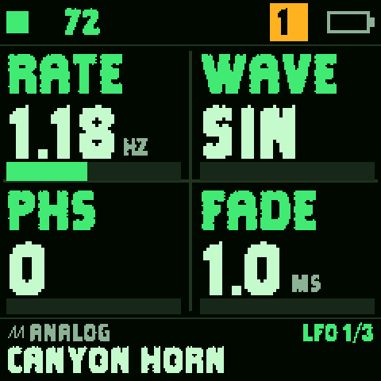
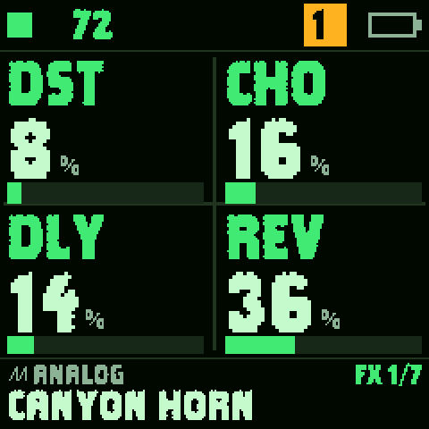
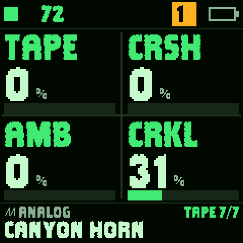
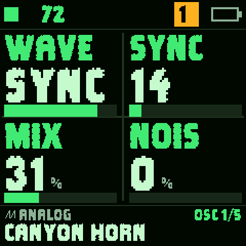
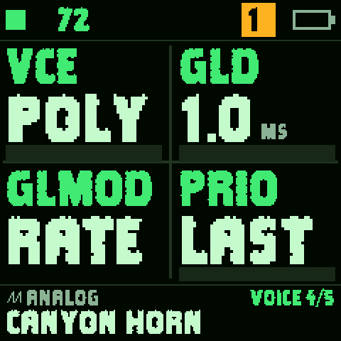
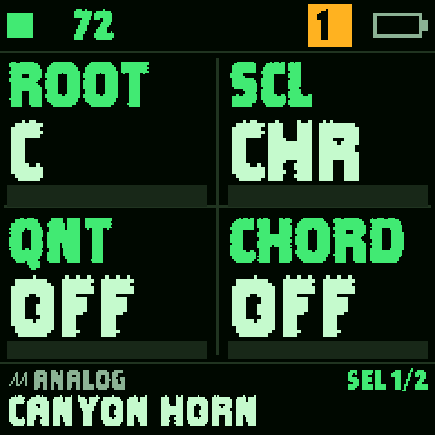
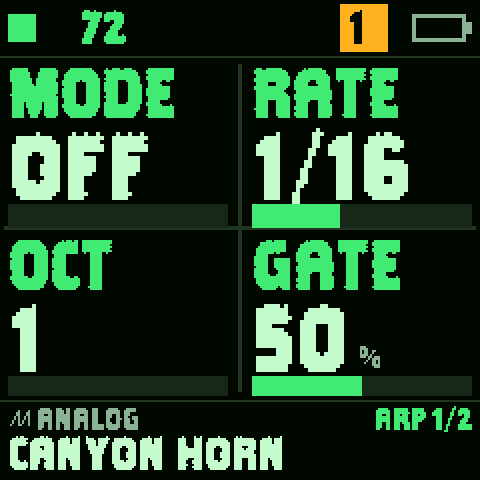
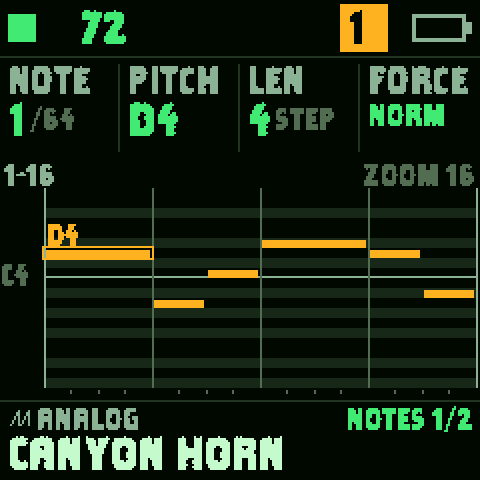
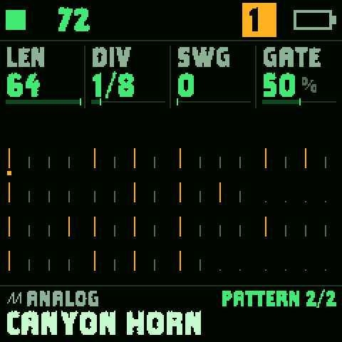
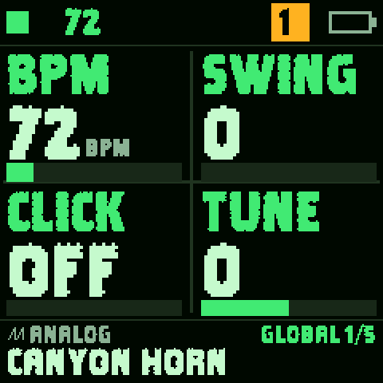
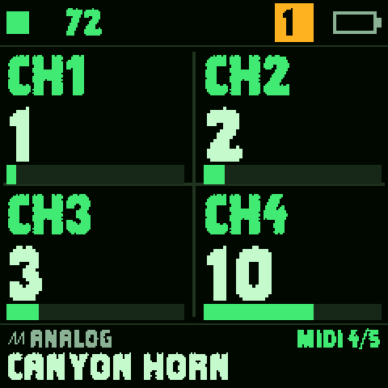
| Button | Its pages |
|---|---|
| ENV | ENV (ATK DEC SUS REL) · ENV DEST (how much the envelope moves the filter, the pitch and the shape) |
| LFO | LFO (RATE WAVE PHS FADE) · LFO 2 · LFO DEST |
| FX | FX (DST CHO DLY REV sends) · FILTER · INSERT · INSERT 2 · DLY · REVERB · TAPE (TAPE CRSH AMB CRKL: the whole mix through a worn cassette, crushed, with ambience and crackle) |
| SCL | SEL (ROOT SCL QNT CHORD) · SEL 2 (TRN STRUM VLEAD) |
| EDIT | the engine's pages: EDIT 1 · EDIT 2 · FILTER · VOICE · VOICE 2. SAURUS shows CALL and THROAT; ROAR shows DRONE and RING |
| ARP | ARP (MODE RATE OCT GATE) · ARP 2 |
| SEQ | NOTES (the piano roll, note by note) · PATTERN (LEN DIV SWG GATE) · SONG |
| GLO | GLOBAL (BPM SWING CLICK TUNE) · SYSTEM · DRUMS · MIDI · MIDI 2 |
| SAVE | PRESETS · USER (your own sounds) · SECTION · TOOLS |
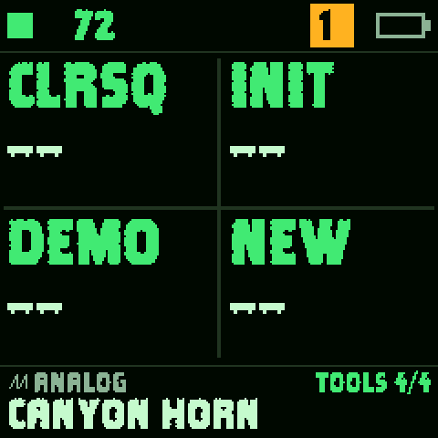
TOOLS does things that can't be taken back, so each one asks twice: turn the knob one click, AGAIN shows, turn it one more click within a moment to do it.
| CLRSQ | clears the selected track's pattern |
| INIT | sets the selected track's sound back to a plain start |
| DEMO | loads the demo song, VALLEY OF GIANTS |
| NEW | a new, empty project |
15Sections and the song
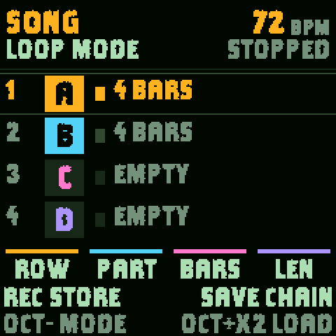
A project holds four sections, A to D: each is a loop of all six tracks. Build one, save it with SAVE + key 5–8, change it, save the next. Then play them live with SAVE + key 1–4, or chain them.
The SONG screen writes them in order. KNOB 1–4 pick the ROW, its PART (A–D), BARS and LEN. REC stores the row, SAVE saves the chain, OCT− switches LOOP / SONG mode and OCT+ twice loads. In SONG mode, PLAY plays the song from the top.
The demo song is a song: sections A B C B C D, about 2:40.
17MIDI, the editor, backups
MIDI. Plug the FM-1 into a computer or a USB host. GLO > MIDI sets the channels: a keyboard on channel 1, 2 or 3 plays track 1, 2 or 3, and CH4 is the drums (10 at first). Notes you play on the FM-1 go out on USB MIDI. A MIDI keyboard works in the browser version too.
The editor. The PALEOTONE editor runs in Chrome or Edge and talks to the FM-1 over USB: back up and restore projects, edit patterns in a piano roll, import MIDI files, load your own samples and drum kits. It also comes as a single file you can keep offline (on the install page).
Saving. Your work is kept on the FM-1 as you go. Before an install or anything risky, make a backup with the editor.
18Troubleshooting and recovery
| Problem | Try |
|---|---|
| The installer can't find the FM-1 | Use Chrome or Edge, a USB data cable straight to the computer (no hub), and close every other MIDI app (DAWs, the editor in another tab). Unplug and plug back in. |
| No sound | Turn up MASTER. Check GLO + keys 1–6 for mutes and 7–12 for solos. Check the track's LEVEL on TRACKS. |
| The keys do something odd | A layer may be locked (LOCK on the screen): tap HOME. Check SCL + KNOB 3 (KEYS) and KNOB 1 (CHORD). |
| A knob or button feels wrong | Calibrate: hold OCT− and OCT+ while switching on (or HOME menu > SYSTEM). |
| The FM-1 won't start after an install | Hold OCT− alone while switching on: USB rescue. Then open the installer again and install. |
| USB rescue doesn't help | Recovery needs a Transporter: see FM-1-transporter. |
| Back to the official firmware | M-VAVE's own updater, M-UPGRADE: m-vave.com/download. |
| Something else | Report a bug: what you did, what you expected, what happened. |